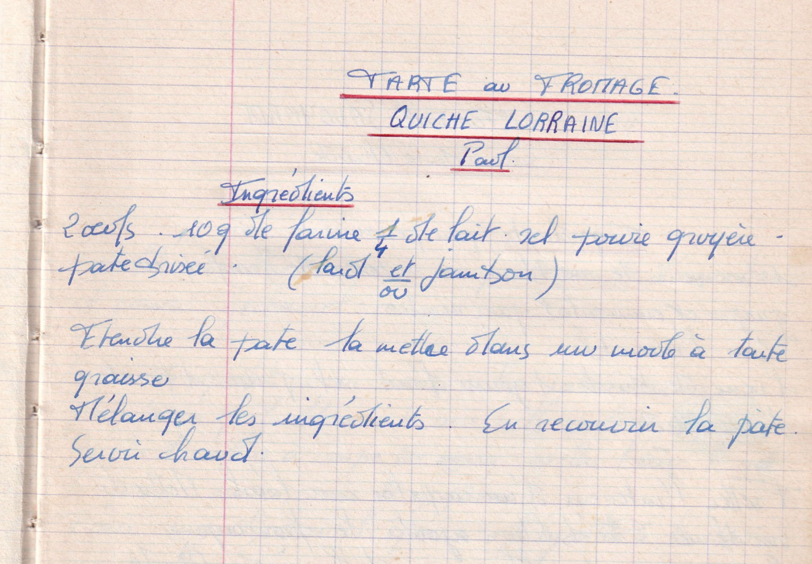

tarte au fromage / Quiche lorraine
Paul - Qui est paul ?

LISTE DES INGREDIENTS
- 2 oeufs
- 10g de farine
- 1/4 de lait/li>
- Sel, poivre
- Gruyère
- Pate brisée
- (Lard et/ou jambon)
PREPARATION
- Etendre la pate, la mettre dans un moule à tarte graissée
- Mélanger les ingrédients
- En recouvrir la pate
- Servir chaud